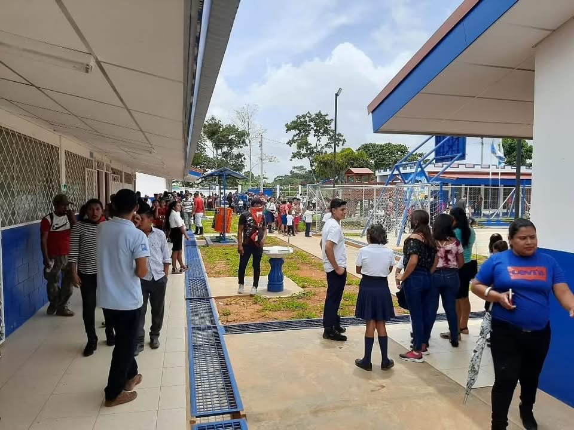

El NER Nueva Alianza reúne centros educativos que comparten el compromiso de acompañar el aprendizaje y el desarrollo integral de sus estudiantes.
Este espacio institucional está destinado a compartir información, actividades, experiencias educativas y logros de nuestra comunidad. La historia, misión y visión oficiales podrán incorporarse cuando sean proporcionadas por la dirección.
✦Valores
🤝Respeto
📚Aprendizaje
Memoria y legado comunitario
Nuestra historia
La historia del Centro Escolar Nueva Alianza es fruto de la organización, el esfuerzo y la esperanza de las familias de El Bote. Desde una pequeña casa comunitaria hasta la infraestructura actual, generaciones de pobladores, docentes y estudiantes han contribuido a mantener viva la educación.
1984
Una casa para la comunidad
Se construyó una sencilla casa comunitaria de madera en un terreno cuyo propietario, don Pedro Pablo Tinoco, autorizó su uso para fines comunitarios. Las familias aportaron madera y zinc. La construcción tenía piso de tierra, techo de zinc y mobiliario rústico. Estaba frente a la Iglesia Betania, donde actualmente se encuentra la casa de don Francisco Ortuño.
1985–1987
Primeras experiencias educativas
La memoria de la comunidad recuerda experiencias de alfabetización y enseñanza básica a cargo de alfabetizadores y docentes comunitarios. También se recuerda a una maestra llamada Teresa, procedente de Matagalpa.
1989
Inicio de la primaria comunitaria
Comenzó de manera organizada la enseñanza primaria con primer grado y la educación de adultos, sostenidas con el apoyo económico de los padres de familia. El maestro comunitario empírico Ricardo Antonio Ruiz estuvo a cargo de este proceso. Para entonces, la escuela ya era conocida como Nueva Alianza.
1991
Atención multigrado
La escuela atendía primero y segundo grado en la mañana, y tercero y cuarto grado por la tarde, debido a que solamente disponía de un espacio de uso múltiple. También se desarrollaban actividades de educación de adultos en casas particulares.
1990–2000
Institucionalización y reconocimiento
Durante este período se desarrolló la institucionalización ante el Ministerio de Educación (anteriormente MED), el registro oficial del centro y la asignación de las primeras plazas presupuestadas para docentes normalistas. El primer director formal consignado en la información histórica local es William Herrera.
1995–1996
Primeras aulas construidas
Con el apoyo del Fondo de Inversión de Emergencia (FISE), se construyeron las primeras tres aulas, incluyendo un aula separada y otra de uso multifuncional. En esta etapa se realizó la primera promoción de sexto grado de primaria de la Escuela Nueva Alianza.
2020–2021
Una infraestructura para una nueva etapa
Se construyó una moderna infraestructura escolar, inaugurada en julio de 2021, con una inversión aproximada de 26 millones de córdobas. Esta obra representa un importante avance para la educación de la comunidad de El Bote.
Reconocimiento a quienes hicieron posible esta historia. Entre los primeros padres y pobladores que impulsaron las gestiones comunitarias se recuerda a Melitonio Gutiérrez Montenegro, Crecencio Hernández Ochoa, María Rivas (familia Lorente), Simón Hernández, Socorro Ruiz, Narciso Gutiérrez y Rosario Gadea. Su colaboración, junto con la de muchas otras familias, permitió abrir camino a la educación.
Entre los docentes recordados en las primeras etapas también figuran Oscar Arnulfo Pérez Hernández, Martha Toruño, Maribel Lanuza y Pablo Úbeda, procedente de San Rafael del Norte. La comunidad conserva además testimonios de otros educadores que contribuyeron al crecimiento del centro.
Nuestra red educativa
Ocho centros, una comunidad
Conoce los centros educativos que forman parte del NER Nueva Alianza.
Conoce las obras, actividades, proyectos y experiencias que forman parte de la vida de nuestros centros educativos.
Noticia destacada · Mayo de 2021
Inauguración del Centro Educativo Nueva Alianza
En la comunidad El Bote, municipio de El Cuá, Jinotega, se inauguró el Centro Educativo Nueva Alianza, una obra que incluyó la construcción de aulas, biblioteca, oficina de dirección y cancha polivalente, además de dotación de mobiliario para fortalecer las condiciones de enseñanza y aprendizaje de nuestra comunidad educativa.
Galería de la inauguración · 7 fotografías
Inauguración · 2021
Memoria de un día especial para nuestra comunidad.

Nuevas instalaciones
Espacios construidos para fortalecer la educación.
Este espacio reunirá avisos y comunicados oficiales del NER Nueva Alianza.
🎓
Actividades
Vida escolar
Compartiremos actividades, celebraciones y experiencias de nuestros centros educativos.
Nuestros recuerdos
Galería fotográfica
La primera escuela comunitaria
Un recuerdo de los primeros espacios que dieron inicio a la historia educativa de Nueva Alianza.
Un recuerdo de Nueva Alianza
Fotografía que forma parte de la memoria de nuestra comunidad educativa.
Primeras palillonas · 1995
Una memoria de las actividades culturales y estudiantiles de nuestra escuela.
Memoria institucional · Mayo de 2021
Inauguración del Centro Educativo Nueva Alianza
Inauguración del Centro Educativo Nueva Alianza, Comunidad El Bote, El Cuá, Jinotega, con la construcción de aulas, biblioteca, oficina de dirección, cancha polivalente y dotación de mobiliario para fortalecer las condiciones de enseñanza y aprendizaje de nuestra comunidad educativa.
Inauguración · Mayo de 2021
Registro fotográfico de las nuevas instalaciones del centro educativo.
Inauguración · Mayo de 2021
Registro fotográfico de las nuevas instalaciones del centro educativo.
Inauguración · Mayo de 2021
Registro fotográfico de las nuevas instalaciones del centro educativo.
Inauguración · Mayo de 2021
Registro fotográfico de las nuevas instalaciones del centro educativo.
Inauguración · Mayo de 2021
Registro fotográfico de las nuevas instalaciones del centro educativo.
Inauguración · Mayo de 2021
Registro fotográfico de las nuevas instalaciones del centro educativo.
Inauguración · Mayo de 2021
Registro fotográfico de las nuevas instalaciones del centro educativo.
Crecimiento y actualización profesional
Formación docente
Espacio institucional para organizar, compartir y dar seguimiento a los procesos de formación, actualización e intercambio pedagógico de los docentes del NER Nueva Alianza.
📘
EPY
Materiales, orientaciones, actividades y evidencias relacionadas con EPY.